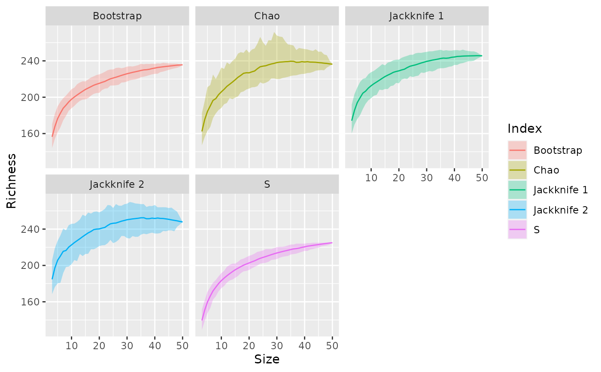

fortify.poolaccum.RdPrepares a fortified version of results from
vegan::poolaccum() objects.
an object of class vegan::poolaccum().
original data set. Currently ignored.
level of quantiles for envelopes shown (default 0.05).
additional arguments passed to vegan::summary.poolaccum(),
notably display to control which indices should be computed.
A data frame with columns index, size, richness, lower,
upper, and std_dev, containing the richness index, permutation richness
estimator, sample size, upper and lower \(1 - \alpha\)
quantile interval, and standard deviation of permutation estimates,
respectively.
library("vegan")
library("ggplot2")
data(BCI)
pool <- poolaccum(BCI)
df <- fortify(pool)
df
#> # A tibble: 240 × 6
#> index size richness lower upper std_dev
#> <fct> <dbl> <dbl> <dbl> <dbl> <dbl>
#> 1 S 3 138. 124. 149. 6.43
#> 2 S 4 150. 137. 160 6.02
#> 3 S 5 159. 147. 169. 5.95
#> 4 S 6 166. 154. 175. 5.13
#> 5 S 7 171. 162. 181 5.11
#> 6 S 8 175. 167 185. 5.01
#> 7 S 9 179. 170 188. 4.81
#> 8 S 10 183. 173. 190 4.97
#> 9 S 11 185. 176. 195. 4.91
#> 10 S 12 188. 179. 198. 4.73
#> # ℹ 230 more rows
ggplot(df, aes(x = size, y = richness, colour = index)) +
geom_ribbon(aes(ymin = lower, ymax = upper, x = size, fill = index),
alpha = 0.3, inherit.aes = FALSE) +
geom_line() +
facet_wrap(~ index)
